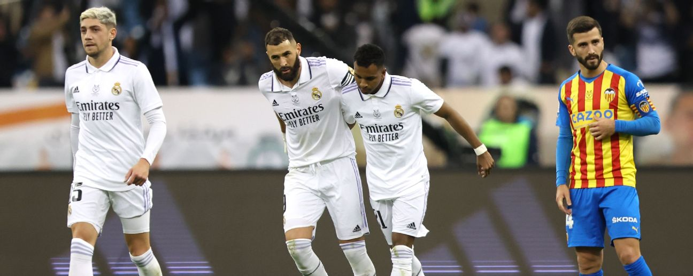

El Real Madrid Club de Fútbol, más conocido simplemente como Real Madrid, es una entidad polideportiva con
sede en Madrid, España. Fue declarada oficialmente registrada como club de fútbol por sus socios el 6 de
marzo de 1902 con el objeto de la práctica y desarrollo de este deporte —si bien sus orígenes datan del año
1900,7 y su denominación de (Sociedad) Madrid Foot-ball Club de octubre de 1901—, siendo el quinto club
fundado en la capital.n. 3 Tuvo a Julián Palacios y los hermanos Juan Padrós y Carlos Padrós como
principales valedores de su creación.8
Identificado por su color blanco —del que recibe el apelativo de «blancos» o «merengues»—,12 es uno de los
cuatro clubes profesionales de fútbol del país cuya entidad jurídica no es la de sociedad anónima deportiva
(S. A. D.),n. 4 ya que su propiedad recae en sus más de 90 000 socios.9 Otra salvedad comparte con el
Athletic Club y el Fútbol Club Barcelona al participar sin interrupción en la máxima categoría de la Liga
Nacional de Fútbol Profesional, la Primera División de España, desde su establecimiento en 1929.1011 En
ella posee los honores de haber sido el primer líder histórico de la competición,12 el de club con más
títulos, y el de la máxima puntuación en una sola edición.13n. 5
Abocado desde sus inicios al desarrollo del fútbol pronto adquirió un carácter multideportivo y desarrolló
varias otras disciplinas que fueron desapareciendo con el devenir de los años,1415 a excepción de la
sección de baloncesto, denominada Real Madrid Baloncesto.16n. 6 Hubo varias especulaciones en la historia
reciente de la entidad sobre la posibilidad de recuperar algunas de ellas como la sección de balonmano,n. 7
o la sección de rugby que no llegaron a materializarse,n. 8 al contrario que una sección femenina de
fútbol, parcela que desde los años 2010 el club trabajaba por crear con una base desde el ciclo formativo
hasta la máxima categoría.17n. 9 Finalmente en 2019, y tomando otra de las posibles vías para su creación,
se produjo la fusión por absorción del Club Deportivo TACON aprobándose en una reunión extraordinaria por
parte de los socios compromisarios y conformar así el Real Madrid Club de Fútbol femenino.181920

Es miembro creador, fundador y cofundador de varias de las competiciones españolas más longevas antes de la
existencia de los pertinentes órganos rectores: el Campeonato Regional Centro, o la Copa de España.2122 A
nivel internacional fue uno de los miembros fundadores de la FIFA,2324 estamento que le concedió la Orden
del Mérito por su especial relevancia en el fútbol25n. 10 y lo señala como uno de los «clubes clásicos» de
España26 tras colaborar en el nacimiento de algunas de las competiciones o asociaciones más prestigiosas
como la Copa de Europa,23272829 la Copa Intercontinental,30 o la Asociación de Clubes Europeos.31n.
11 Mismo camino toma en el apartado baloncestístico, donde es junto al Club Joventut Badalona el único club
que ha disputado siempre desde su creación en 1957 la máxima categoría de liga,32 de la que es también
miembro fundador,33n. 12 así como de la homónima Copa de Europa,34 o el Torneo de Navidad
internacional.35
En cuanto a los logros deportivos, es una de las entidades más laureadas y reconocidas del mundo en ambas
disciplinas,3036 y ha sido galardonado a nivel futbolístico nacional e internacional por la FIFA como el
Mejor Club del siglo xx,37 como el Mejor Club Europeo y Mundial del siglo xx por la Federación
Internacional de Historia y Estadística de Fútbol (IFFHS),38 y como el mejor Club del Siglo xxi por la
organización Globe Soccer.3940 Entre ambas disciplinas suma un total de doce campeonatos mundiales y
veinticuatro Copas de Europa, más que ningún otro club europeo en el conjunto de ambos deportes,n. 13
situándose décimo en palmarés polideportivo si se toman en cuenta secciones que el club no posee.41 A nivel
nacional es el club español más laureado.4243